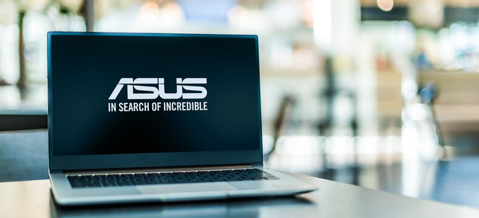
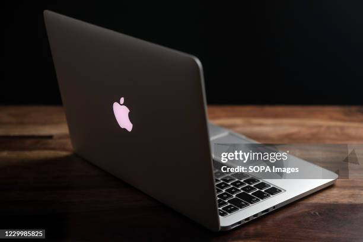

hp Laptop

HP provides a wide variety of affordable laptops with the latest features, making it a great option for those looking for a new laptop. Some of the most popular HP laptops below can help you decide which laptop is right for you.
Dell Laptop

Dell provides laptops for every user, workload, and business purpose. The Latitude and Vostro families of laptops, as well as Precision mobile workstations, are designed for the specific needs of various workers.
ASUS Laptop

ASUS is a Taiwan-based, multinational computer hardware and consumer electronics company that was established in 1989. Dedicated to creating products for today's and tomorrow's smart life, ASUS is the world's No. 1 motherboard and gaming brand as well as a top-three consumer notebook vendor.
MACBook
MacBook is a brand of Mac notebook computers designed and marketed by Apple that has been using Apple's macOS operating system since 2006. The MacBook brand replaced the PowerBook and iBook brands during the Mac transition to Intel processors, announced in 2005.